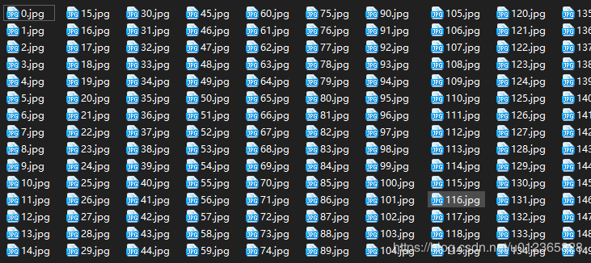

目录：
0 引言
1 环境
2 代码实现
3 后记
前段时间，微信朋友圈开始出现了一种晒照片新形式，微信好友墙，即在一张大图片中展示出自己的所有微信好友的头像。
效果如下图，出于隐私考虑，这里作了模糊处理。
是不是很炫，而且这还是独一无二的，毕竟每个人的微信好友是不一样的。本文就教大家用Python来实现这种效果。
操作系统：Windows
Python版本：3.7.3
我们需要首先需要获取好友的头像信息，接下来处理图像并完成图像的拼接。
在这里，我们登录微信获取好友信息，使用的是 wxpy 模块；处理并生成最终的图像借助 PIL 模块。因为都是第三方模块，如环境中没有可以使用 pip 进行安装。另外涉及路径的处理等，我们需要导入 os 模块和 sys 模块。
from wxpy import *
import PIL.Image as Image
import os
import sys我们要获取微信好友的头像，首先需要登录微信
# 初始化机器人，扫码登陆微信，适用于Windows系统
bot = Bot()
# # Linux系统，执行登陆请调用下面的这句
# bot = Bot(console_qr=2, cache_path="botoo.pkl"在获取好友头像信息之前，我们得先在本地创建一个目录，用于后续存储好友头像的文件。
# 获取当前路径信息
curr_dir = get_dir(sys.argv[0])
# 如果FriendImgs目录不存在就创建一个
if not os.path.exists(curr_dir + "FriendImgs/"):
os.mkdir(curr_dir + "FriendImgs/")接下来就是获取友头像信息，并将其存储在本地创建的目录中。
my_friends = bot.friends(update=True)
# 获取好友头像信息并存储在FriendImgs目录中
n = 0
for friend in my_friends:
friend.get_avatar(curr_dir + "FriendImgs/" + str(n) + ".jpg")
n = n + 1这时你就可以在本地FriendImgs文件夹中，看到保存下来的微信好友头像的图片。

制作微信好友墙，就像以前的大字报，把我们下载的好友头像逐一贴上去即可。
首先设定好微信好友墙的尺寸，使用 Image.new() 方法。
image = Image.new("RGB", (650, 650))接下来，我们需要逐个打开微信好友的图片，使用 Image.open() 方法。
img = Image.open(curr_dir + "FriendImgs/" + file_names)将微信头像图片，重置为50*50像素尺寸的小图，使用 img.resize() 方法。
img = img.resize((50, 50), Image.ANTIALIAS)然后将图片黏贴到我们的照片墙中，使用 image.paste() 方法。
image.paste(img, (x * 50, y * 50))最后将制作完成的照片墙保存下来，使用 image.save() 方法。
img = image.save(curr_dir + "WeChat_Friends.jpg")现在我们将本小节中代码整合到一起，如下所示：
# 准备生成微信好友头像墙的尺寸
image = Image.new("RGB", (650, 650))
# 定义初始图片的位置
x = 0
y = 0
# 获取下载的头像文件
curr_dir = get_dir(sys.argv[0])
ls = os.listdir(curr_dir + 'FriendImgs')
# 遍历文件夹的图片
for file_names in ls:
try:
# 依次打开图片
img = Image.open(curr_dir + "FriendImgs/" + file_names)
except IOError:
continue
else:
# 重新设置图片的大小
img = img.resize((50, 50), Image.ANTIALIAS)
# 将图片粘贴到最终的照片墙上
image.paste(img, (x * 50, y * 50))
# 设置每一行排13个图像
x += 1
if x == 13:
x = 0
y += 1
# 保存图片为WeChat_Friends.jpg
img = image.save(curr_dir + "WeChat_Friends.jpg代码执行后，最终生成的效果图如下：
(这里展示的图片做了模糊处理)
本文中设定照片墙尺寸为650650，而好友头像尺寸为5050，这样最终制作成的照片墙每行有13位好友，共计容纳13*13位好友。
大家可根据自己实际情况，自行调整尺寸参数，以达到最佳效果。大家赶快去生成自己独一无二的照片墙吧~！
好啦，本文所有内容就到这里结束啦。其实后面还可以衍生很多玩法，比如：心行墙、圆墙等。不过逻辑一样，就是代码处理起来会比较麻烦。有兴趣的可以先自己试试，或者等我……
代码已上传至Github：https://github.com/MiracleYoung/You-are-Pythonista/tree/master/PythonExercise/Tool/Wechat_Photo_Wall
关注公众号「Python专栏」了解更多有趣的Python～